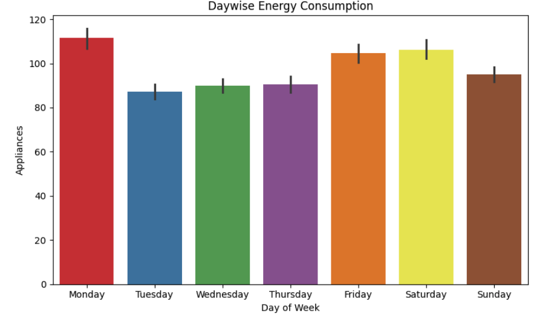

Auto-Rotating View: Exploratory Data Analysis
Appliance Energy Consumption Prediction
Forecasted hourly appliance energy usage for a Belgian household using 10-minute resolution environmental data. Built regression models (Random Forest, XGBoost, LASSO) and demonstrated that feature-rich models outperform pure time-series approaches.
My Role: Sole contributor — built data pipeline, feature engineering, and model benchmarking.
Outcome: Random Forest delivered best performance (R² = 0.60, RMSE = 63.10); MAPE reduced from 67% (linear baseline) to 30% with tuned tree ensembles.
Technologies: Python, Jupyter, Pandas, Scikit-learn, ARIMA, Random Forest, XGBoost